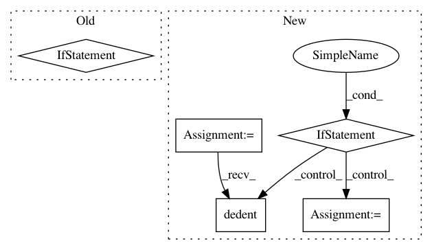

521a439d63e54a7a71e8f3ccc121c511744f5f24,lib/streamlit/__init__.py,,_get_current_delta_generator,#,93
Before Change
def _get_current_delta_generator():
display_enabled = config.get_option("client.displayEnabled")
if display_enabled and _is_running_with_run_command:
global _delta_generator
if _delta_generator is None:
_delta_generator = _get_new_delta_generator()
return _delta_generator
else:
return _NULL_DELTA_GENERATOR
def _with_dg(method):
@functools.wraps(method)
def wrapped_method(*args, **kwargs):
dg = _get_current_delta_generator()
After Change
else:
global _warning_has_been_displayed
if not _warning_has_been_displayed:
_warning_has_been_displayed = True
if util.is_repl():
_LOGGER.warning(textwrap.dedent("""
════════════════════════════════════════════════
Will not generate Streamlit report
────────────────────────────────────────────────
To generate report, use Streamlit in a file and
run it with:
streamlit run [FILE_NAME] [ARGUMENTS]
════════════════════════════════════════════════
"""))
else:
script_name = sys.argv[0]
_LOGGER.warning(textwrap.dedent("""
════════════════════════════════════════════════
Will not generate Streamlit report
────────────────────────────────────────────────
To generate report, run this file with:
streamlit run %s [ARGUMENTS]
════════════════════════════════════════════════
"""), script_name)
return _NULL_DELTA_GENERATOR
def _with_dg(method):
In pattern: SUPERPATTERN
Frequency: 3
Non-data size: 5
Instances
Project Name: streamlit/streamlit
Commit Name: 521a439d63e54a7a71e8f3ccc121c511744f5f24
Time: 2019-05-07
Author: thiagot@gmail.com
File Name: lib/streamlit/__init__.py
Class Name:
Method Name: _get_current_delta_generator
Project Name: bokeh/bokeh
Commit Name: f82ba26ddda1bf5ccffa2f40707c673f2ee1892f
Time: 2017-06-20
Author: bryanv@continuum.io
File Name: bokeh/plotting/helpers.py
Class Name:
Method Name: _add_sigfunc_info
Project Name: pantsbuild/pants
Commit Name: 3e9e103c1d6f32f5a40f8a94a240b03221ba2bea
Time: 2016-04-17
Author: benjyw@gmail.com
File Name: src/python/pants/help/build_dictionary_info_extracter.py
Class Name: BuildDictionaryInfoExtracter
Method Name: get_description_from_docstring